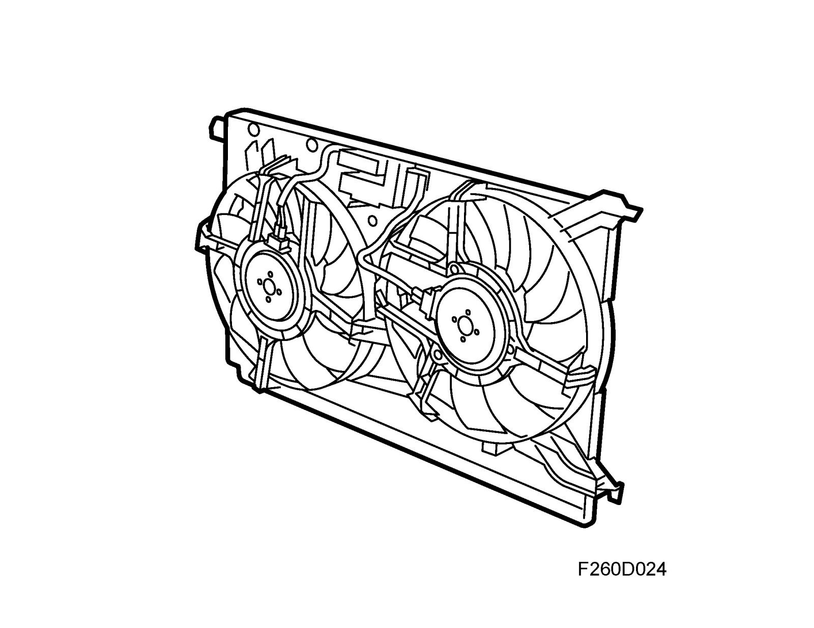
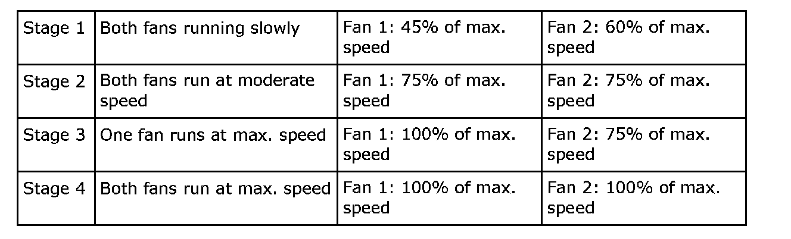
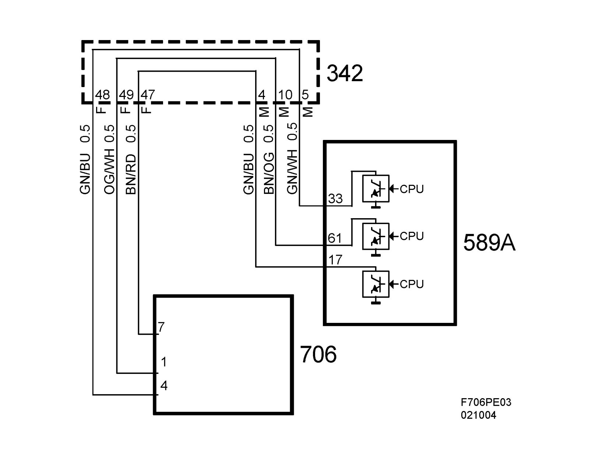
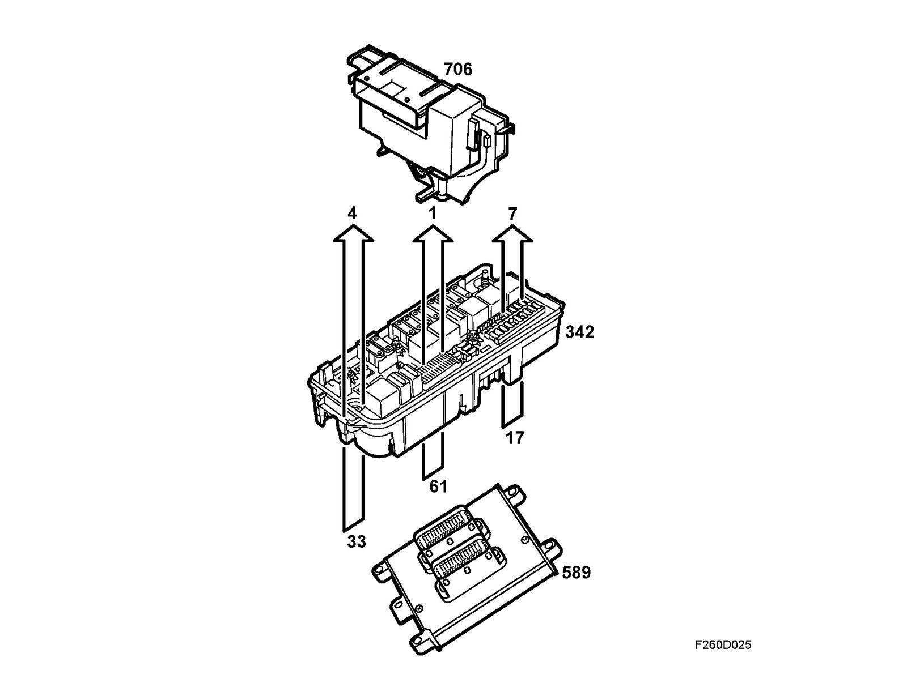
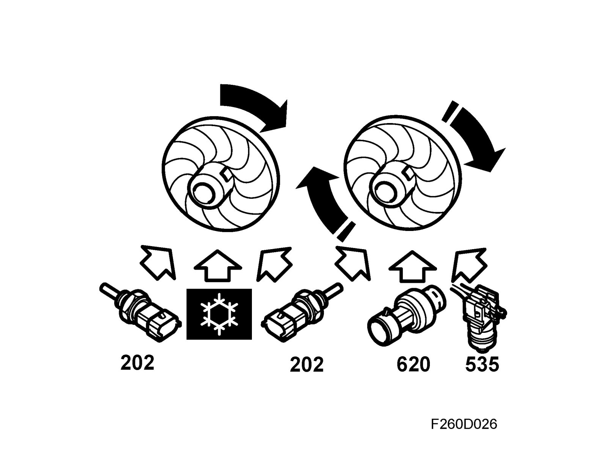
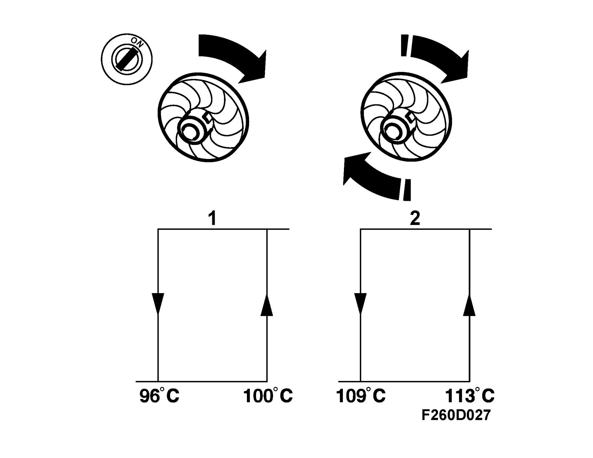
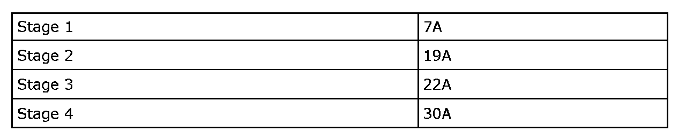

Detailed Description, Radiator Fans
Detailed description, radiator fansRadiator fan logic

The car has two radiator fans located behind the radiator. The fans have 11 vanes and a diameter of 320 mm. The fans can be run at four different speeds, depending on the engine temperature and A/C pressure.

The radiator fans have their own relay box. Communication between the ECM and fan relay box is enabled by wiring via the UEC.
The fans are controlled by ECM through the following input signals:
^ Coolant temperature
^ A/C pressure
^ Fluid temperature from automatic transmission


Radiator fan relay box (706) is supplied with +30 from UEC to pins 3 and 6, and is grounded to G30A from pins 5 and 2.
3 leads lead from the ECM via the UEC to the relay box. These leads are connected to pins 1, 4 and 7 on the relay box. The four fan speeds are controlled by the grounding of these three leads.
The radiator fans start in the following cases:

1. Temperature logic:
Radiator fan speed 1 is engaged when the coolant temperature reaches 100 °C and is disengaged when the temperature has dropped to 96 °C.
Radiator fan speed 2 is engaged when the coolant temperature reaches 108 °C and returns to fan speed 1 when the temperature has dropped to 104 °C.
Radiator fan speed 3 is engaged when the coolant temperature reaches 114 °C and returns to fan speed 2 when the temperature has dropped to 110 °C.
Radiator fan speed 4 is engaged when the coolant temperature reaches 120 °C and returns to fan speed 3 when the temperature has dropped to 116 °C.
2. A/C pressure logic
Stage 1 on the radiator fans starts at an A/C pressure over 1100 kPa and stops at a pressure below 800 kPa.
Stage 2 on the radiator fans starts at an A/C pressure over 1700 kPa and returns to stage 1 at a pressure of 1400 kPa.
Stage 3 on the radiator fans starts at an A/C pressure over 2000 kPa and returns to stage 2 at a pressure of 1800 kPa.
Stage 4 on the radiator fans starts at an A/C pressure over 2300 kPa and returns to stage 3 at a pressure of 2100 kPa.
If the temperature of the automatic transmission fluid rises to 140 °C, the radiator fans will start at speed 4, irrespective of the temperature of the engine or pressure in the A/C system. Once the transmission temperature has dropped to 130 °C, the radiator fans will return to following the normal logic.
If the temperature signal is missing, the radiator fans will run constantly at full speed, i.e. stage 4.
Operation with ignition ON

With the ignition switch turned to ON, ECM will use the following information on the bus:
^ Coolant temperature (bus from ECM)
^ A/C pressure
^ A/C system status (active/inactive)
^ Transmission temperature
This information is used by ECM to control starting and stopping the radiator fans.
Idle speed compensation
In order to maintain a constant idling speed when the radiator fans are turned on or off, there is a 3 second delay before the fans are engaged. During this time, the engine control module will start to compensate for the increased load so that the idling speed will not drop when the radiator fans start.
Current consumption
Approximate radiator fan current consumption at different speeds:

The maximum current for speed 4 must not exceed 40A.
Operation with ignition OFF
The ECM controls the radiator fans when the ignition is OFF based on the engine temperature. If the temperature is lower than 100°C, the fans will remain switched off. If the temperature exceeds:
100 °C the fans run for 30 seconds
105 °C the radiator fans run for 90 seconds
110 °C the radiator fans run for 150 seconds
115 °C the radiator fans run for 210 seconds
120 °C the radiator fans run for 270 seconds
The radiator fans run at speed 1. A new temperature measurement is taken every 30 seconds.
Note that fans can only run at speed 1 when the ignition is OFF.